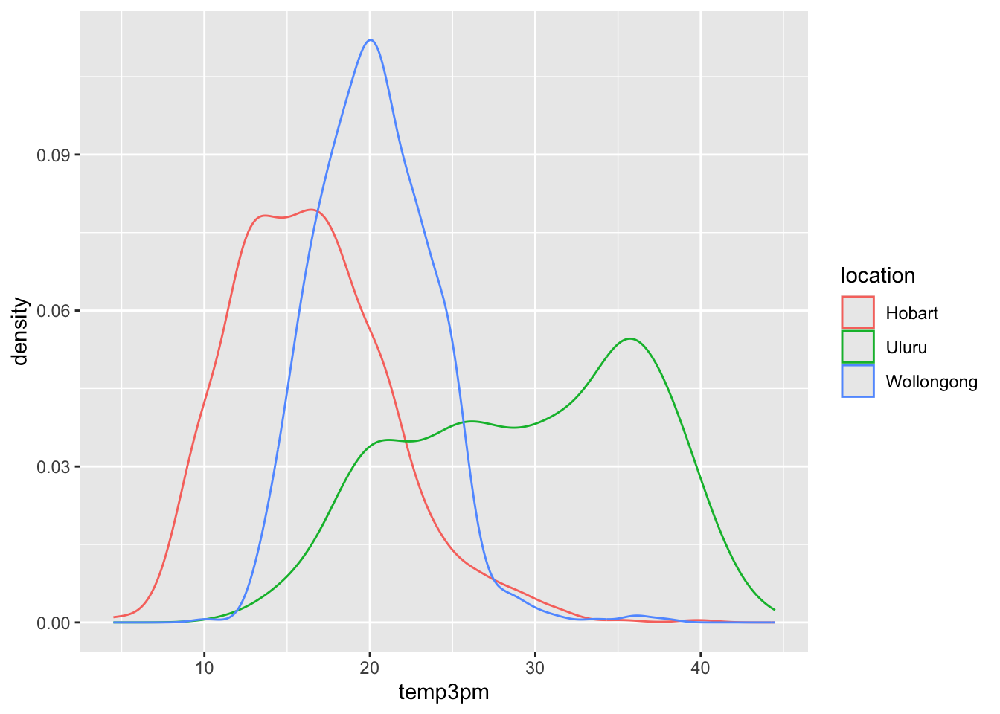
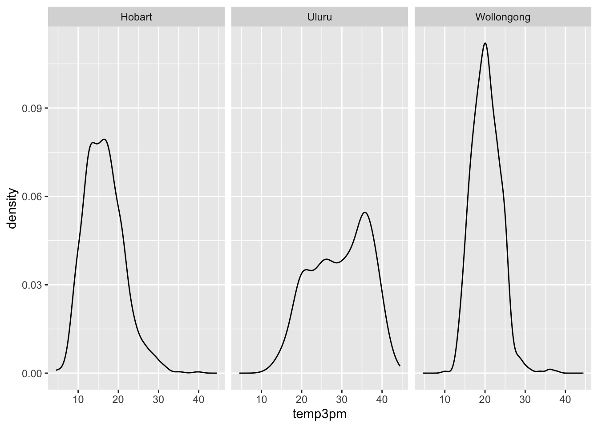
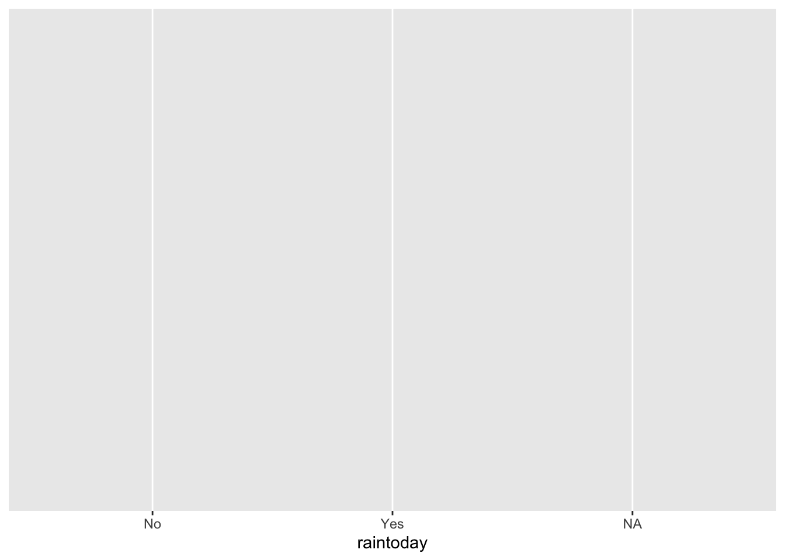
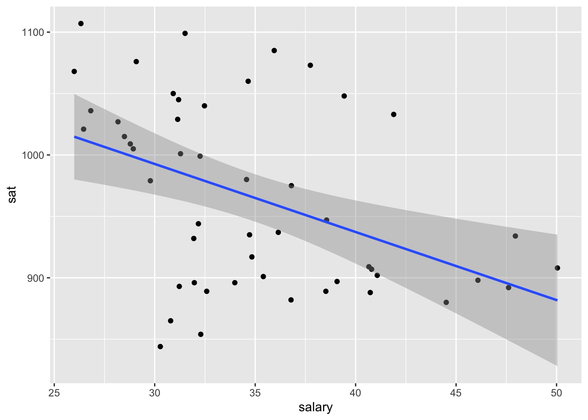
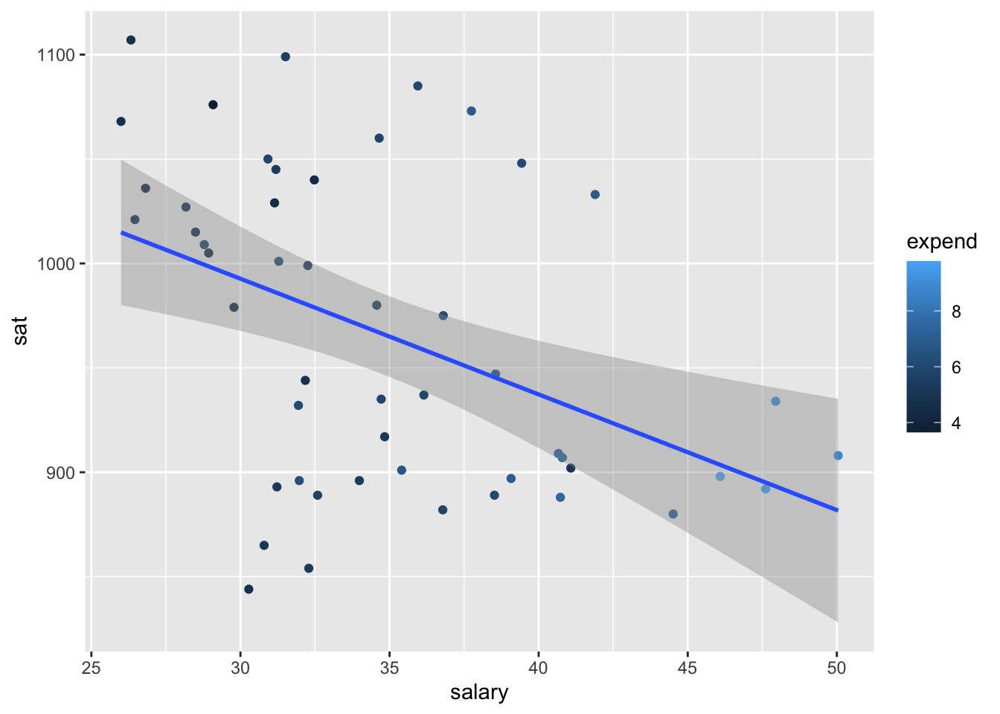
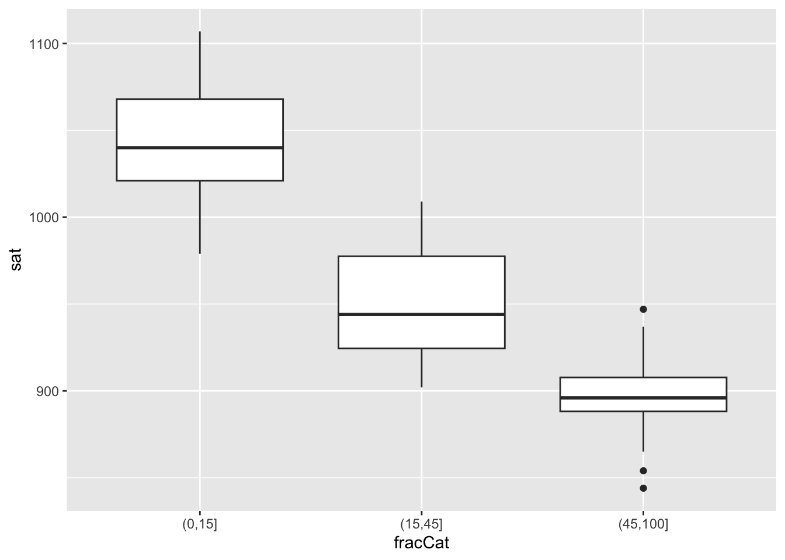

── Attaching core tidyverse packages ──────────────────────── tidyverse 2.0.0 ──
✔ dplyr 1.1.4 ✔ readr 2.1.5
✔ forcats 1.0.0 ✔ stringr 1.5.1
✔ ggplot2 3.5.1 ✔ tibble 3.2.1
✔ lubridate 1.9.4 ✔ tidyr 1.3.1
✔ purrr 1.0.2
── Conflicts ────────────────────────────────────────── tidyverse_conflicts() ──
✖ dplyr::filter() masks stats::filter()
✖ dplyr::lag() masks stats::lag()
ℹ Use the conflicted package (<http://conflicted.r-lib.org/>) to force all conflicts to become errorsMultivariate Viz
Use this file for practice with the multivariate viz in-class activity. Refer to the class website for details.
Review
date location mintemp maxtemp rainfall evaporation sunshine
1 2020-01-01 Wollongong 17.1 23.1 0 NA NA
2 2020-01-02 Wollongong 17.7 24.2 0 NA NA
3 2020-01-03 Wollongong 19.7 26.8 0 NA NA
4 2020-01-04 Wollongong 20.4 35.5 0 NA NA
5 2020-01-05 Wollongong 19.8 21.4 0 NA NA
6 2020-01-06 Wollongong 18.3 22.9 0 NA NA
windgustdir windgustspeed winddir9am winddir3pm windspeed9am windspeed3pm
1 SSW 39 SSW SSE 20 15
2 SSW 37 S ENE 13 15
3 NE 41 NNW NNE 7 17
4 SSW 78 NE NNE 15 17
5 SSW 57 SSW S 31 35
6 NE 35 ESE NE 17 20
humidity9am humidity3pm pressure9am pressure3pm cloud9am cloud3pm temp9am
1 69 64 1014.9 1014.0 8 1 19.1
2 72 54 1020.1 1017.7 7 1 19.8
3 72 71 1017.5 1013.0 6 NA 23.4
4 77 69 1008.8 1003.9 NA NA 24.5
5 70 75 1018.9 1019.9 NA 7 20.7
6 71 71 1021.2 1018.2 NA NA 20.9
temp3pm raintoday risk_mm raintomorrow
1 22.9 No 0.0 No
2 23.6 No 0.0 No
3 25.7 No 0.0 No
4 26.7 No 0.0 No
5 20.0 No 0.0 No
6 22.6 No 0.8 No [1] "date" "location" "mintemp" "maxtemp"
[5] "rainfall" "evaporation" "sunshine" "windgustdir"
[9] "windgustspeed" "winddir9am" "winddir3pm" "windspeed9am"
[13] "windspeed3pm" "humidity9am" "humidity3pm" "pressure9am"
[17] "pressure3pm" "cloud9am" "cloud3pm" "temp9am"
[21] "temp3pm" "raintoday" "risk_mm" "raintomorrow" 'data.frame': 2367 obs. of 24 variables:
$ date : Date, format: "2020-01-01" "2020-01-02" ...
$ location : chr "Wollongong" "Wollongong" "Wollongong" "Wollongong" ...
$ mintemp : num 17.1 17.7 19.7 20.4 19.8 18.3 19.9 20.1 19.8 20.5 ...
$ maxtemp : num 23.1 24.2 26.8 35.5 21.4 22.9 25.6 23.2 23.1 25.4 ...
$ rainfall : num 0 0 0 0 0 0 0.8 1.6 0 0 ...
$ evaporation : num NA NA NA NA NA NA NA NA NA NA ...
$ sunshine : num NA NA NA NA NA NA NA NA NA NA ...
$ windgustdir : chr "SSW" "SSW" "NE" "SSW" ...
$ windgustspeed: int 39 37 41 78 57 35 44 41 39 56 ...
$ winddir9am : chr "SSW" "S" "NNW" "NE" ...
$ winddir3pm : chr "SSE" "ENE" "NNE" "NNE" ...
$ windspeed9am : int 20 13 7 15 31 17 30 31 24 19 ...
$ windspeed3pm : int 15 15 17 17 35 20 7 33 26 39 ...
$ humidity9am : int 69 72 72 77 70 71 76 77 76 79 ...
$ humidity3pm : int 64 54 71 69 75 71 72 76 79 76 ...
$ pressure9am : num 1015 1020 1018 1009 1019 ...
$ pressure3pm : num 1014 1018 1013 1004 1020 ...
$ cloud9am : int 8 7 6 NA NA NA NA 8 NA NA ...
$ cloud3pm : int 1 1 NA NA 7 NA NA NA NA NA ...
$ temp9am : num 19.1 19.8 23.4 24.5 20.7 20.9 22.9 21.3 21.2 23 ...
$ temp3pm : num 22.9 23.6 25.7 26.7 20 22.6 24.9 22.2 22.2 25.1 ...
$ raintoday : chr "No" "No" "No" "No" ...
$ risk_mm : num 0 0 0 0 0 0.8 1.6 0 0 1 ...
$ raintomorrow : chr "No" "No" "No" "No" ...Example 1

Example 2
Construct 3 plots that answer the following question: - How do afternoon temperatures (temp3pm) differ by location?
# Plot 1 (no facets & starting from a density plot of temp3pm)
ggplot(weather, aes(x = temp3pm, color = location)) +
geom_density(alpha = 0.6)Warning: Removed 19 rows containing non-finite outside the scale range
(`stat_density()`).
Warning: Removed 19 rows containing non-finite outside the scale range
(`stat_boxplot()`).
Warning: Removed 19 rows containing non-finite outside the scale range
(`stat_density()`).
Reflection:
- Temperatures tend to be highest, and most variable, in Uluru. There, they range from ~10 to ~45 with a typical temp around ~30 degrees.
- Temperatures tend to be lowest in Hobart. There, they range from ~5 to ~45 with a typical temp around ~15 degrees.
- Wollongong temps are in between and are the least variable from day to day.
Note: defining Fill and Color
- If defined by a named color, they are defined outside of
aes()in quotes- Ex.:
geom__(fill = "blue")
- Ex.:
- If defined by a variable, they are defined in
aes()- Ex.:
geom__(aes(fill = variable))orggplot (_, aes(fill = variable))
- Ex.:
Example 3
# How often does it raintoday?
# Fill your geometric layer with the color blue.
ggplot(woll, aes(x = raintoday)) +
geom_bar(fill = "blue")
# If it does raintoday, what does this tell us about raintomorrow?
# Use your intuition first
ggplot(woll, aes(x = raintoday))
# Now compare different approaches
# Default: stacked bars
ggplot(woll, aes(x = raintoday, fill = raintomorrow)) +
geom_bar()
# Side-by-side bars
ggplot(woll, aes(x = raintoday, fill = raintomorrow)) +
geom_bar(position = "dodge")
# Proportional bars
# position = "fill" refers to filling the frame, nothing to do with the color-related fill
ggplot(woll, aes(x = raintoday, fill = raintomorrow)) +
geom_bar(position = "fill")
Reflection:
- There’s often not one “best plot”, but a combination of plots that provide a complete picture:
- The stacked and side-by-side bars reflect that on most days, it does not rain.
- The proportional / filled bars lose that information, but make it easier to compare proportions: it’s more likely to rain tomorrow if it also rains today.
Example 4
Construct a plot that illustrates how 3pm temperatures (temp3pm) vary by date in Wollongong. Represent each day on the plot and use a curve/line to help highlight the trends.
# THINK: What variable goes on the y-axis?
# For the curve, try adding span = 0.5 to tweak the curvature
ggplot(woll, aes(y = temp3pm, x = date)) +
geom_point() +
geom_smooth(span = 0.5)`geom_smooth()` using method = 'loess' and formula = 'y ~ x'Warning: Removed 18 rows containing non-finite outside the scale range
(`stat_smooth()`).Warning: Removed 18 rows containing missing values or values outside the scale range
(`geom_point()`).
Example 5
Considering all three locations
# Plot temp3pm vs temp9am
# Change the code in order to indicate the location to which each data point corresponds
ggplot(weather, aes(y = temp3pm, x = temp9am, color = location)) +
geom_point()Warning: Removed 27 rows containing missing values or values outside the scale range
(`geom_point()`).
# Change the code in order to indicate the location to which each data point corresponds
# AND identify the days on which it rained / didn't raintoday
ggplot(weather, aes(y = temp3pm, x = temp9am, color = location)) +
geom_point() +
facet_wrap(~ raintoday)Warning: Removed 27 rows containing missing values or values outside the scale range
(`geom_point()`).
Example 6
Example 7

Exercise 1
# Import and check out data
education <- read.csv("https://mac-stat.github.io/data/sat.csv")
head(education) State expend ratio salary frac verbal math sat fracCat
1 Alabama 4.405 17.2 31.144 8 491 538 1029 (0,15]
2 Alaska 8.963 17.6 47.951 47 445 489 934 (45,100]
3 Arizona 4.778 19.3 32.175 27 448 496 944 (15,45]
4 Arkansas 4.459 17.1 28.934 6 482 523 1005 (0,15]
5 California 4.992 24.0 41.078 45 417 485 902 (15,45]
6 Colorado 5.443 18.4 34.571 29 462 518 980 (15,45]Part a:
Part b:
- The range of the average scores go from <800 to >1100.
- The shape appears to peak at just over 900, with a smaller peak at about 1050.
Exercise 2
Can the variability in sat scores from state to state be partially explained by how much a state spends on education, specifically its per pupil spending (expend) and typical teacher salary?
Part a:
# Construct a plot of sat vs expend
# Include a "best fit linear regression model" (HINT: method = "lm")
ggplot(education, aes(x = expend, y = sat)) +
geom_point() +
geom_smooth(method = "lm")`geom_smooth()` using formula = 'y ~ x'
# Construct a plot of sat vs salary
# Include a "best fit linear regression model" (HINT: method = "lm")
ggplot(education, aes(x = salary, y = sat)) +
geom_point() +
geom_smooth(method = "lm")`geom_smooth()` using formula = 'y ~ x'
Part b:
- There is a weak negative relationship between both
expendvssatandsalaryvssat. - It is surprising that the relationship is negative; it seems that the less is spent, the higher the average score seems to be.
Exercise 3
Construct one visualization of the relationship of sat with salary and expend.
ggplot(education, aes(x = salary, y = sat, color = expend)) +
geom_point() +
geom_smooth(method = "lm")`geom_smooth()` using formula = 'y ~ x'Warning: The following aesthetics were dropped during statistical transformation:
colour.
ℹ This can happen when ggplot fails to infer the correct grouping structure in
the data.
ℹ Did you forget to specify a `group` aesthetic or to convert a numerical
variable into a factor?
Exercise 4
ggplot(education, aes(y = sat, x = salary, color = cut(expend, 3))) +
geom_point() +
geom_smooth(se = FALSE, method = "lm")`geom_smooth()` using formula = 'y ~ x'
- It seems that lower
salaryandexpendleads to highersatscores.
Exercise 5
Part a:

Part b:

- The more people take the SAT in a state, the lower the average score. This might be because if the general trend is to not take the SAT, those who do tend to have higher goals and standards.
Part c:
# Trivariate visualization of sat relating to expend AND fracCat.
# Highlight the differences in fracCat groups through color AND unique trend lines.
ggplot(education, aes(y = sat, x = expend, color = fracCat)) +
geom_point() +
geom_smooth(method = "lm")`geom_smooth()` using formula = 'y ~ x'
- It seems that within each
fracCatgroup, higherexpendleads to highersatscores.
Part d:
- In states with lower
salaryandexpend,fracCatis also lower—fewer students choose to take the SAT. - Because of this, those that do tend to score higher because they’re more likely to have higher academic goals.
- This wasn’t apparent when looking at the data as a whole, but when each
fracCatgroup is isolated, it becomes clear that expenditure does lead to higher SAT scores.
Exercise 6:
# From here, the code is commented out because it causes problems for rendering "margin too large"
# Remove the "State" column and use it to label the rows
# Then scale the variables
# plot_data <- education |>
# column_to_rownames("State") |>
# data.matrix() |>
# scale()
# Load the gplots package needed for heatmaps
# library(gplots)
# Construct heatmap 1
# heatmap.2(plot_data,
# dendrogram = "none",
# Rowv = NA,
# scale = "column",
# keysize = 0.7,
# density.info = "none",
# col = hcl.colors(256),
# margins = c(10, 20),
# colsep = c(1:7), rowsep = (1:50), sepwidth = c(0.05, 0.05),
# sepcolor = "white", trace = "none"
# )# Construct heatmap 2
# heatmap.2(plot_data,
# dendrogram = "none",
# Rowv = TRUE, ### WE CHANGED THIS FROM NA TO TRUE
# scale = "column",
# keysize = 0.7,
# density.info = "none",
# col = hcl.colors(256),
# margins = c(10, 20),
# colsep = c(1:7), rowsep = (1:50), sepwidth = c(0.05, 0.05),
# sepcolor = "white", trace = "none"
# )# Construct heatmap 3
# heatmap.2(plot_data,
# dendrogram = "row", ### WE CHANGED THIS FROM "none" TO "row"
# Rowv = TRUE,
# scale = "column",
# keysize = 0.7,
# density.info = "none",
# col = hcl.colors(256),
# margins = c(10, 20),
# colsep = c(1:7), rowsep = (1:50), sepwidth = c(0.05, 0.05),
# sepcolor = "white", trace = "none"
# )Exercise 7
Part a:
Part b: